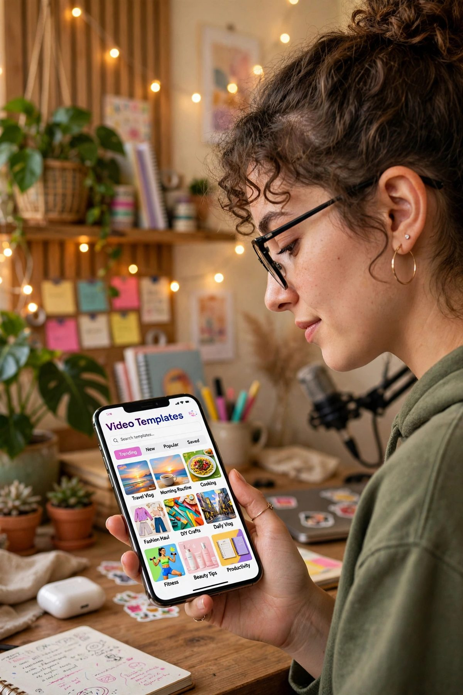

How to Install CapCut Officially

Installing the real CapCut takes under two minutes and costs nothing. Follow the steps for your phone below — and only ever install it from Google Play or the App Store.
Install on Android (Google Play)
Open the Google Play Store app on your phone and tap the search bar at the top. Type "CapCut" and tap search. The official app is called "CapCut - Video Editor" and the developer listed underneath is ByteDance — check this carefully, because copycat apps use similar names and icons. Tap "Install" and wait for the download to finish; the app needs roughly 200–300 MB of free space, and more for its templates and effects, which download as you use them. When the button changes to "Open", tap it. That is the whole install — no settings to change, no files from websites, and no "unknown sources" permission needed.
Install on iPhone (App Store)
Open the App Store, tap the Search tab, and type "CapCut". The official app is "CapCut - Photo & Video Editor" by ByteDance Ltd. Tap "Get", confirm with Face ID, Touch ID or your Apple ID password, and wait for the download. The app is free, with optional in-app purchases for the premium tier. Once installed, tap "Open". If your iPhone is short on space, the App Store will tell you before downloading — free up space by removing an unused app or some old videos, then try again.
Check you have the real app
Before you sign in, confirm three things. First, the developer name: ByteDance on Google Play, ByteDance Ltd. on the App Store. Second, the download count and reviews: the official app has hundreds of millions of downloads and millions of ratings. Third, the icon: a black square with a white stylised "X" style mark. Copycat apps often use a slightly different icon or add words like "Pro" or "Premium Free" to the name. If anything looks off, uninstall it and install again from the store links on this page.
First-run setup
When CapCut opens for the first time, it asks for permission to access your photos and videos — grant it, or the app cannot import your clips. You can sign in with Google, Apple, TikTok, Facebook or email, or use the app without an account; signing in syncs your projects and templates to the cloud. The app may offer a premium trial on the welcome screen — you can skip it and use the free version. Then tap "New project", pick a video from your gallery, and you are editing. Our beginners guide walks through your first edit in ten minutes.
Keeping CapCut updated
Turn on automatic updates so you always have the newest effects and security fixes: on Android, open Play Store, find CapCut, tap the three dots and enable auto-update; on iPhone, go to Settings, App Store, and turn on App Updates. CapCut updates every few weeks, and templates for new trends arrive with those updates. If a template a friend sent you says it needs a newer version, update the app before assuming something is broken.
Troubleshooting install problems
If the install button is greyed out, your phone may be too old for the current version — check the app's requirements on its store page, or free up storage and try again. If the download stalls, switch between Wi-Fi and mobile data, or restart the phone. If Play Store says "not available in your country", the app may be restricted in your region; do not work around this with an APK file from a download site — that is exactly how compromised copies spread. Wait for official availability or use the web version of CapCut on a computer instead.
Frequently asked questions
Is CapCut free to install?
Yes. The app is free on both stores, with an optional premium subscription inside the app for extra effects and templates.
How much storage does CapCut need?
The app itself is around 200–300 MB. Templates, effects and exported videos need extra space, so keep at least 1 GB free.
Can I install CapCut on a PC?
Yes — there is an official CapCut desktop app for Windows and Mac from the CapCut website, and a web editor that runs in the browser.
Download CapCut — official app
Get the real CapCut free from your official app store. No modified files, no risk.
Try the tools
Aspect Ratio Calculator
Presets for TikTok, Reels, Shorts and YouTube. Enter one side and get the matching resolution instantly.
Bitrate & Export Size Calculator
Work out how big your exported video will be from its length and bitrate — or the bitrate for a target size.
Caption Timing Helper
Paste your script and split it into timed caption lines with start and end timestamps, ready to use.
Template Idea Generator
Pick a niche and a mood and get a complete edit idea: hook, style, transitions and music vibe.
More guides
 What Is CapCut Mod APK?
What Is CapCut Mod APK? CapCut Premium vs Free
CapCut Premium vs Free Is CapCut Mod APK Safe?
Is CapCut Mod APK Safe?
Best CapCut Templates in 2026 Auto Captions in CapCut
Auto Captions in CapCut Keyframe Animation in CapCut
Keyframe Animation in CapCut CapCut Transitions Tutorial
CapCut Transitions Tutorial Best Video Quality Settings
Best Video Quality Settings Best Export Settings in CapCut
Best Export Settings in CapCut CapCut for TikTok
CapCut for TikTok CapCut for Instagram Reels
CapCut for Instagram Reels Text Effects in CapCut
Text Effects in CapCut Background Removal in CapCut
Background Removal in CapCut Speed Ramping in CapCut
Speed Ramping in CapCut Filters and Effects in CapCut
Filters and Effects in CapCut Audio Editing in CapCut
Audio Editing in CapCut CapCut vs KineMaster
CapCut vs KineMaster CapCut for Beginners
CapCut for Beginners Trending Edits Tutorial
Trending Edits Tutorial